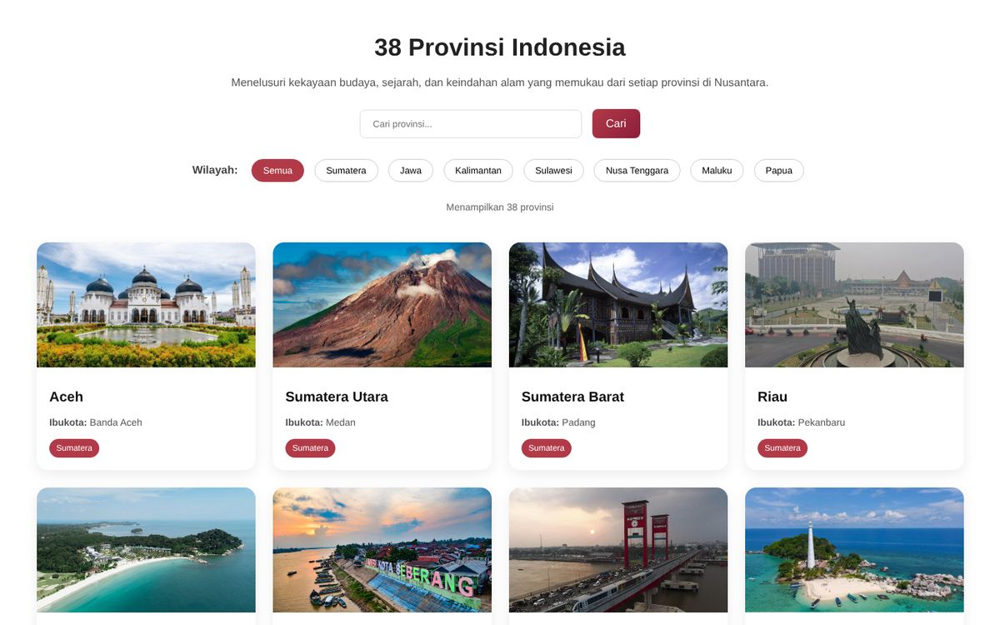
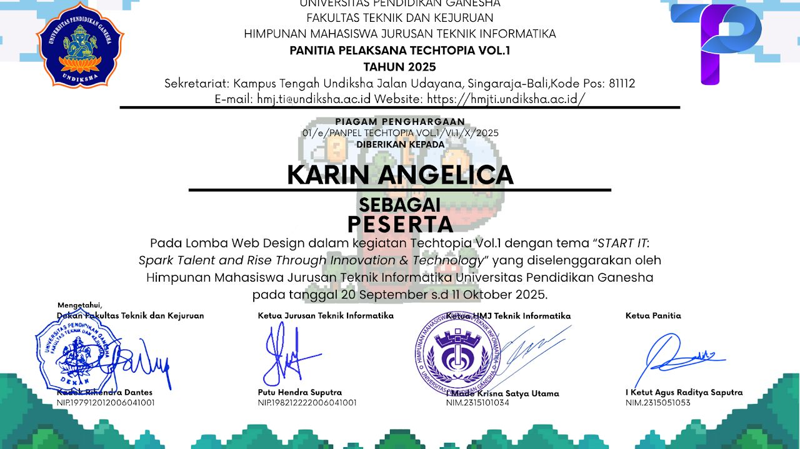

Archipelore
Portal web yang mengajak pelajar menjelajahi budaya, sejarah, rumah adat, dan kuliner dari 38 provinsi Indonesia.
Masalah
Setiap provinsi di Indonesia menyimpan budaya, alam, dan sejarah yang layak dipelajari. Kami ingin ada satu tempat yang ringan dan menarik bagi pelajar untuk mengenal semuanya, tanpa harus membuka banyak sumber sekaligus.
Lomba Web Design Techtopia Vol.1 mengangkat tema “START IT: Spark Talent and Rise Through Innovation & Technology”. Kami melihatnya sebagai kesempatan untuk mengenalkan Indonesia lewat dunia digital.
Solusi
Archipelore adalah portal dengan empat halaman utama: Beranda untuk menjelajah provinsi, Berita budaya, Tentang Kami, dan Kontak, ditambah halaman Kebijakan & Privasi.
Data 38 provinsi disimpan dalam satu array JavaScript, lalu ditampilkan sebagai kartu secara otomatis. Dengan cara ini, menambah atau memperbaiki konten cukup dilakukan di satu tempat tanpa mengubah HTML.
Fitur utama
- Kartu 38 provinsi lengkap dengan foto, ibu kota, dan label wilayah.
- Pencarian dan filter wilayah untuk Sumatera, Jawa, Kalimantan, Sulawesi, Nusa Tenggara, Maluku, dan Papua, disertai jumlah provinsi yang sedang tampil.
- Jendela detail berisi sejarah, budaya, rumah adat, dan makanan khas, dengan tautan ke sumber Wikipedia.
- Halaman berita budaya dan formulir kontak untuk pengunjung.

Peran saya
Sebagai founder dan leader, saya memimpin tim dan memastikan setiap konten budaya tersampaikan dengan jelas dan edukatif. Saya juga menyusun struktur halaman serta menulis kode HTML, CSS, dan JavaScript-nya. Grace Kirana, co-founder, mengatur strategi konten digital.
Hasil
Archipelore terpilih sebagai salah satu dari enam finalis Lomba Web Design Techtopia Vol.1 dengan skor 78,83. Lomba ini diselenggarakan HMJ Teknik Informatika Universitas Pendidikan Ganesha pada 20 September sampai 11 Oktober 2025.
Techtopia Vol.1 2025, finalis web design
